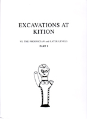

Vassos Karageorghis
Excavations at Kition: VI. The Phoenician and Later Levels
Department of Antiquities: Nicosia, Cyprus, 2004
 |
The publication of this final Volume VI of the excavations at Kition, on the Phoenician and later levels, has been delayed for various reasons outlined below. The importance of the material, however, has not been diminished. For four hundred years the history of Cyprus was dominated by the presence of the Phoenicians on the island. This period coincided with the full development and the end of the Cypriote kingdoms for which archaeology is, up to now. one of the principal sources of information. The archaeological material from Kition, combined with the rich harvest of inscriptions which this site has yielded, is an indispensable tool for research into the political, social and cultural life on the island of Cyprus . Amathus and Idalion are the two other sites where archaeological research is still going on and which will provide valuable additional material relating to the role of the Phoenicians in Cyprus. The publication of the results of these excavations, especially of the epigraphically rich material recently discovered at Idalion, will contribute considerably. I wish we had a fuller report on the ten years of excavations at Tamassos. It was decided that the best way to proceed with the publication of Kition VI would be the initial publication of a volume of plates for the objects. This demanded the transfer of many objects from the Larnaca District Museum for photography and drawing, a time-consuming task. With the help of Dr. Maria Hadjicosti, who participated in the excavations at Kition and Yiannis Hadjisavvas, who accumulated vast experience working with me for the preparation of plates of all my previous excavations, we produced this volume in 1999. This, I realize post eventum, was not a correct decision. 1 had not personally gone through all the material, which was handled by a number of young archaeologists who acted as assistants at the time of the excavation. Thus, inevitably, a number of mistakes were made, especially in the numbering of objects, which I discovered only while writing up the text for Part II of Vol. VI, which dealt with the inventoried objects and which was printed in 2003. Its preparation had already started in 1999, but for various reasons the actual printing had to be delayed. This erroneous procedure resulted in the many corrigenda in the volume of plates. The responsibility, however, is entirely mine, and nobody else's. In the preface to the volume I acknowledged the help which I received from a number of people. The preparation of Part 1 of this volume started in 2003. It comprises the study of the architectural remains from the earliest Phoenician temples to the residential buildings of the Roman period (Floors 3. 2A, 2, 1, C, B and A), as well as the problem of the chronology and some general remarks. For the study of the architectural remains I had, as for Vol. V the valuable assistance of Olivier Callot, who studied Temple 1 (Floors 3, 2A and 2). His study is published as Chapter II 1 in this volume, with his own drawings and plans. I am very grateful to him, although as I mention in my text, I do not entirely agree with his reconstruction of the temple; but 1 find his suggestions very ingenious. In the preliminary publication (Karageorghis 1976), as well as in Kition II and III, which dealt with the Egyptian and Egyptianizing objects and the Phoenician inscriptions respectively, I used a chronology which was very tentative. It was only later, with the meticulous study of the Phoenician pottery from Kition by Patricia Bikai and the Black-on-Red wares by Nicola Schreiber that the new chronology of the material became more precise. Thus, in view of the new evidence, I had to revise the chronology which I suggested previously. I express my apologies to those who have been using the old Kition chronology since 1976. I must say, however, that I have not changed my ideas regarding the first appearance of the Phoenicians at Kition in the second half of the 9th century B.C. Part II of Vol. VI comprises a large number of appendices written by experts, which are most valuable for the understanding of a number of specific groups of objects, ceramics, seals, coins, lamps etc. May they all find here the expression of my gratitude and my apologies for the long delay which occurred before their studies appeared in print. This delay, as explained above, is not entirely my fault. |
| Back to Publications | Table of Contents |